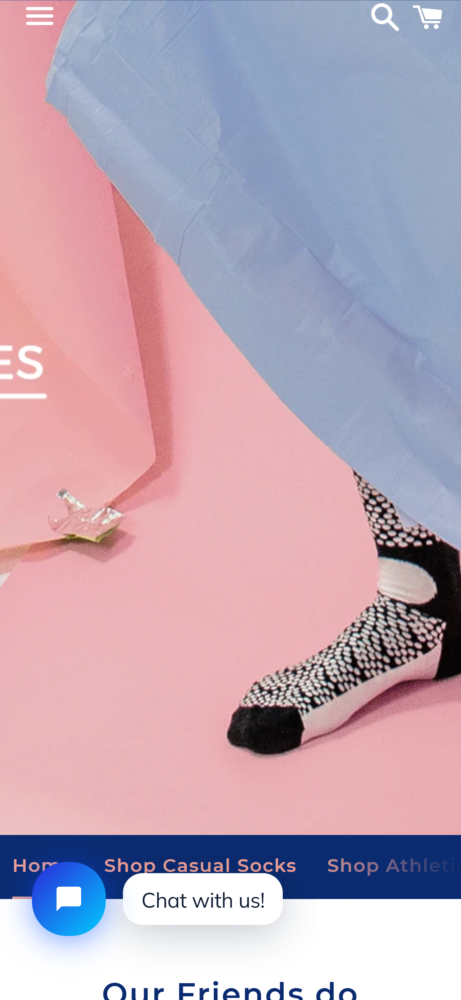

Visual Hierarchy
Topology
Topology does a great job implementing the visual hierarchy on their home page. The pair of glasses is the first thing that catches the attention of the public. They ranked the elements on their website in a way that transmit they business objective. The next one in the hierarchy is the quote "Get eyewear tailords just for you." After that an elegant signutare above the pair of glasses is displayed.
Rule of Thirds
Trainline
Trainline's main obejective is to get the public to book tickets to visit beautiful places in the world. The way that they grab the attention of the public is by showing them pictures of places that they could visit. They invest in good photography skills that the majority of their pictures use the rule of thirds. One this specific picture of the Dugald Stewart Monument, they have have the image divided into nine equal parts by two equally spaced horizontal lines and two equally spaced vertical lines.
Contrast
Odd Pears
Odd Pears' home page is the perfect example of the contrast design principle. The home page shows colors that show a distinct difference between the background and the socks. Moreover, the foot modeling the sock is placed in a strategic place that delivers a more meaningful content to the public.